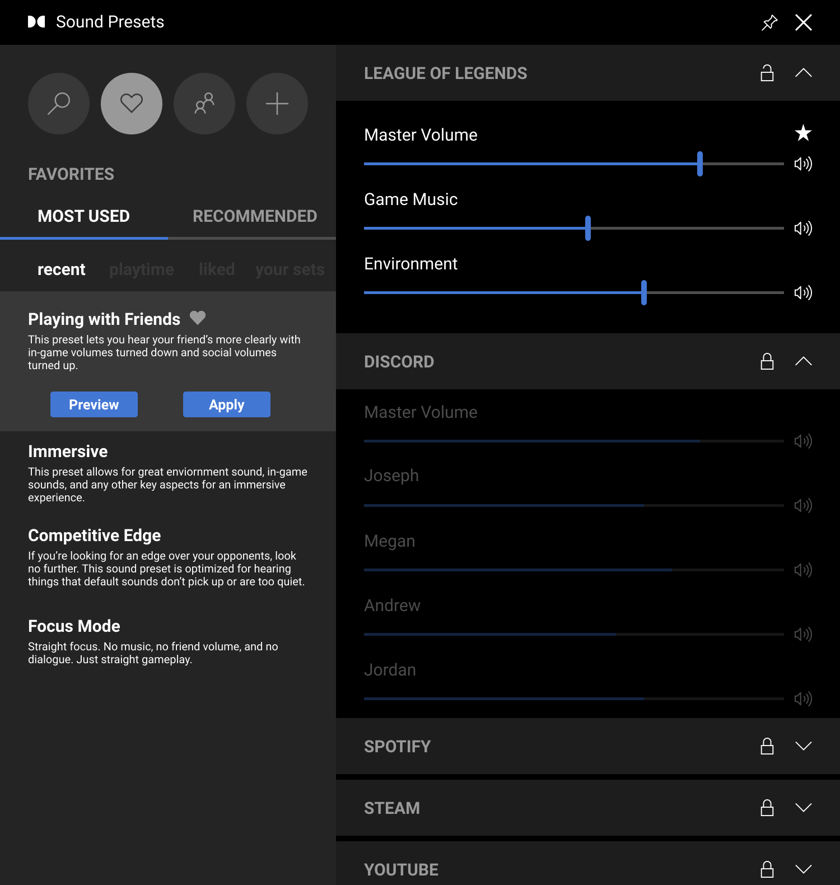
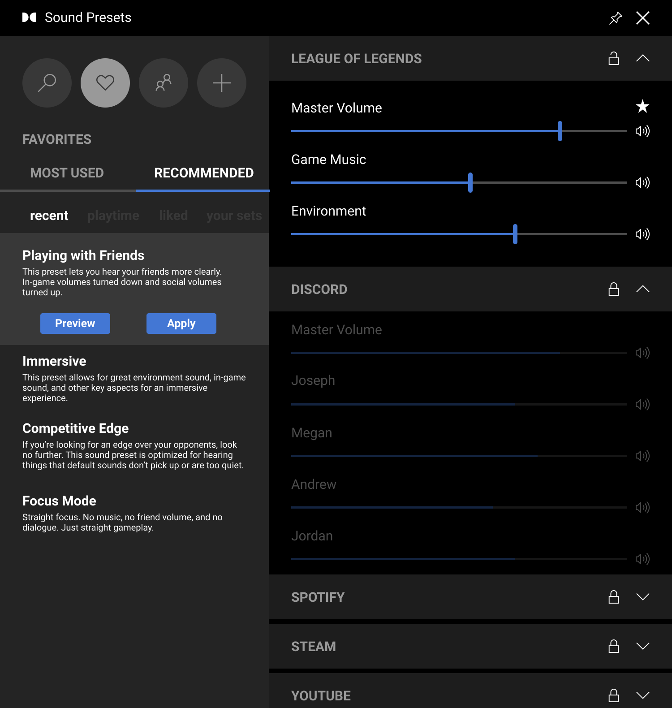
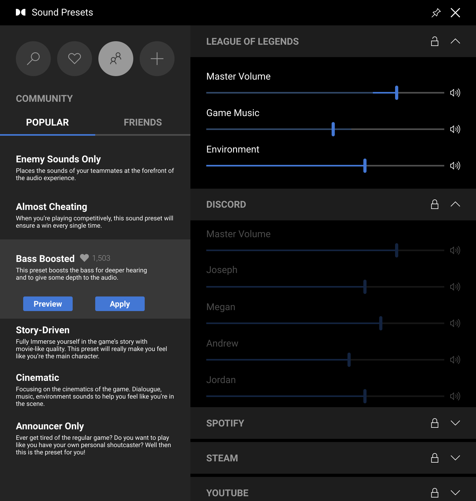
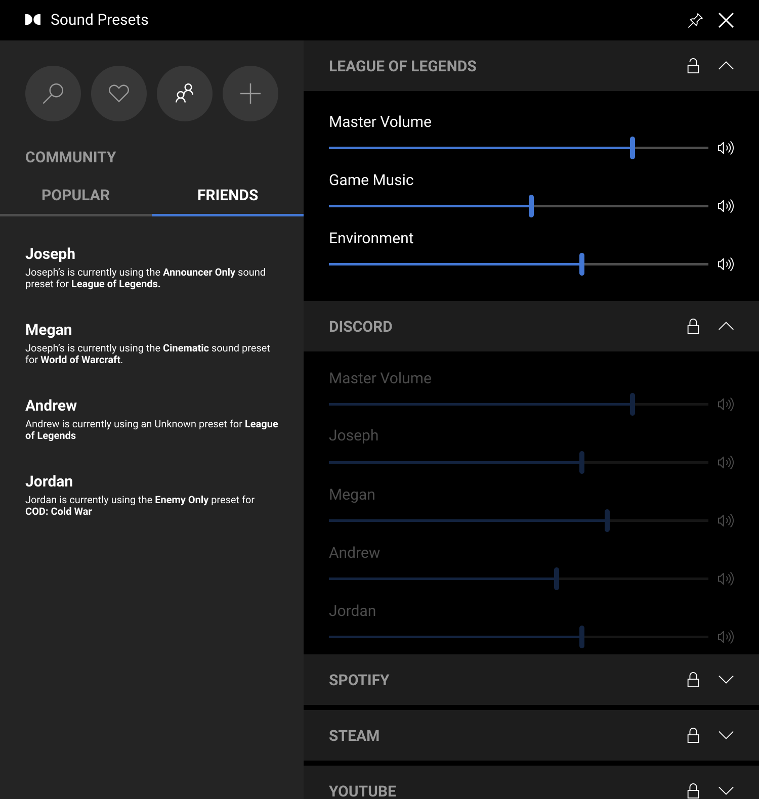
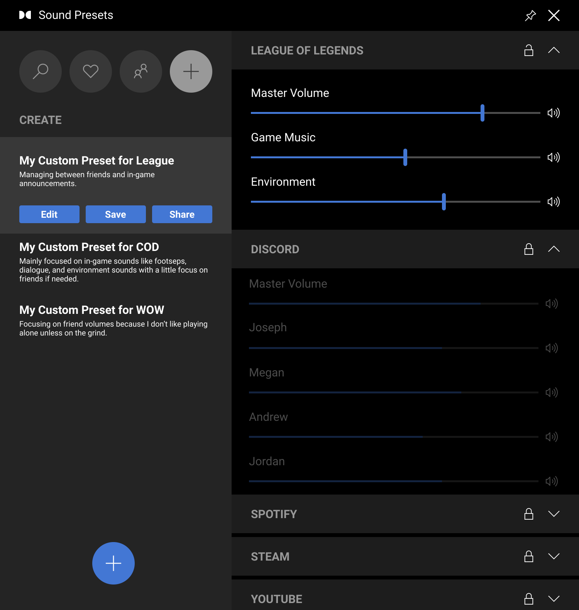
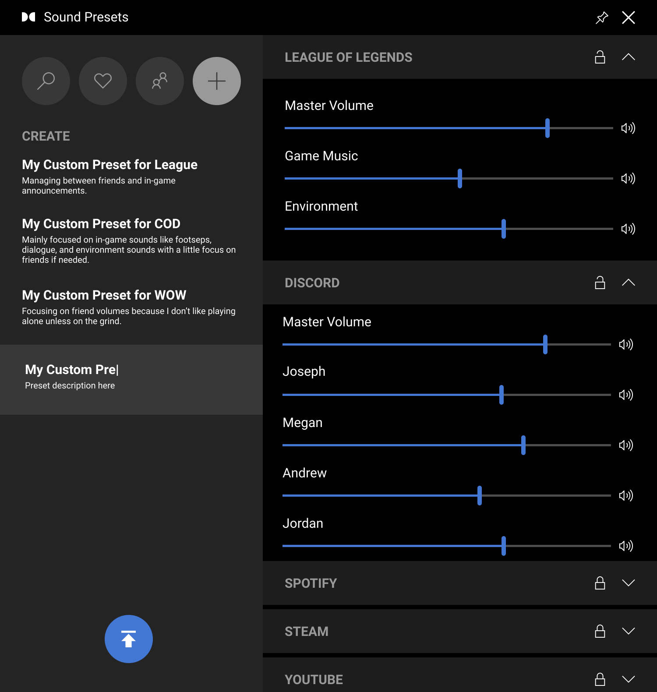
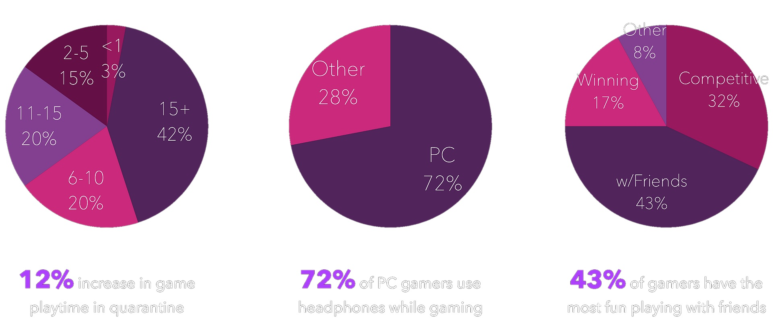
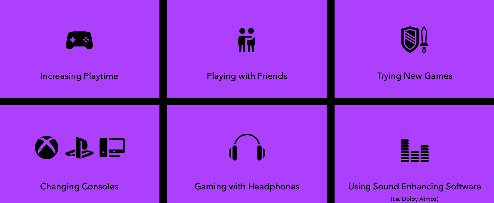
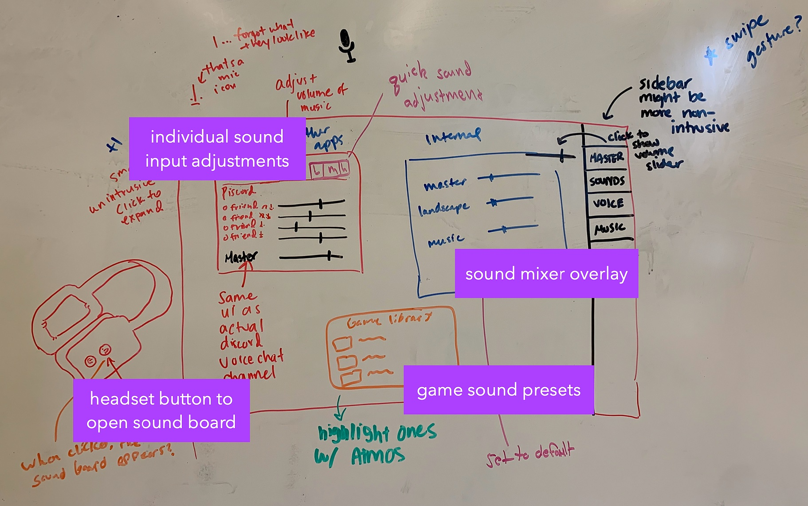
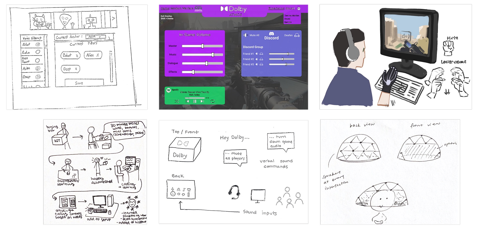

DOLBY ATMOS
Fall Semester 2020
Project Brief
During the Fall 2020 semester, my team worked with Dolby on a project as part of our Experience Studio course at Purdue University. We were initially tasked to create a new tool that enabled gamers to use Dolby's Atmos sound program with ease. After a long research stage, the team found that creating a digital sound mixer widget through Windows Game bar would provide one central hub for sound settings and customization that has community capabilities for instant sharing and use as well as having easy user adoption to the widget.
My Role
I co-led a team of six UX Design students and worked closely with multiple sponsors on the Dolby team. I was responsible for conducting interviews, synthesizing findings from stakeholders, and designing the wireframes for our finalized concept. As a team lead, I mentored and delegated tasks to first-year students throughout the course of the semester as well as guided the overall direction of the project.
COVID Pandemic
Our design opportunity for this semester was to focus on the impact of COVID on gamers. The social environment is essential in gaming. And because of COVID, this environment has been impacted on a personal level as well as the entirety of the gaming community. As a team, we found an opportunity to focus on community support in a time where people are isolating at an unprecedented level. As the semester continued, our user group narrowed further.
SOLUTION WALKTHROUGH
Users are prompted to adjust their sound settings while they wait for the game to load.
By pressing the correct hotkeys (a combination of keys that when pressed performs a task quickly), users activate Dolby Sound Presets Widget in Windows Game Bar.


Now, Dolby Sound Presets Widget is launched.
Favorites are organized by Most Used and Recommended. Subcategories Recent, Playtime, Liked, and Your Sets help users decide which preset will fit their needs. Users can Preview the preset and see and hear sounds change in real-time. Users can Apply the preset to their game
Users can Favorite individual sounds within a sound category. Starring is to put that slider (Master Volume) at the top of the list, pinning it as important

Community is organized by Popular presets and presets a gamer’s Friends are currently using. When clicking a specific preset, the number of likes it has is visible. Users are able to Preview and Apply the sound settings if they desire. Previewing a preset enables users to visually compare how their sounds would change. Users can also hear how the settings change game sound.

Navigating to the Friends section in Community brings up this page.
Users are able to see what settings their friends are currently using for the corresponding game. They can choose to apply those settings to their own game as well.

Clicking the + icon brings up the Create menu.
Here, users are able to see a library of presets they’ve made. They can Edit an already-existing preset, and manipulate sound using sliders on the right. Once they are happy with their edits, they can hit Save. Share enables users to publish their preset to the Community tab. An animation will show their preset moving to the Community tab
If users want to Create a new preset, they can click the + icon at the bottom. This will bring up a new field to save presets.

Users can name their preset and description, select the sound levels for it, and... Publish the preset to their personal library
RESEARCH
Our first plan of action was to narrow our problem scope through literature reviews relevant to our problem space. We hoped to have a better understanding of this space, and possibly identify some surface-level traits that gamers have. The areas identified through the literature review were:
- Types of Gamers
- Headphone Usage
- Sound Softwares
- Video Game Market
- COVID-19 Effects
From this, we learned a few things:
- Gamer types are not on a linear spectrum from casual to competitive, but are characterized by their behaviors.
- Surround sound is especially crucial for competitive games.
- Online gaming activity is on the rise following the pandemic.
- Having a social aspect is important for many gamers.
Survey
When we realized that gamers could be categorized with behaviors, we wanted a way to identify those behaviors and design around our findings. We figured the best way to do this was though a survey, as it would help us solidify types of gamers with raw data. We created a google survey that sought out to find these gamer behaviors so that we could categorize and design around them. We sent this survey through reddit, discord, and our peers, and ended up with 239 responses.

“During lockdown I was completely free, that's why I could devoted my time to games.”
“Though I do try to play with friends when I can because it's been really fun.”
”Uneven volume levels between background music, voices, and ambient sounds”
My Role
To gain some more insights into those who took the survey, we conducted 18 interviews from the survey respondants. We wanted to gain insight from gamers’ first-hand experiences with an emphasis on gaming behaviors and sound experiences.
From this, we learned of 6 categories of behaviors, seen below.

Our main insights included:
- Gaming is an emotional experience
- Gamers are influenced by their friends’ behaviors
- Multiplayer PC gaming has the most opportunity for innovation
- Balancing sound is a main pain point when playing with others
CONCEPT GENERATION
Problem Framing
PC gamers playing online games with their friends need a way to balance the core audio inputs so that they can customize the gaming experience to their sound preferences.
- We picked PC gamers as these made up a majority of our interview & survey respondents who reported behavior changes
- We focused on balancing audio inputs because this was the biggest frustration among the gamers we talked to
- Our research made it clear to us that each gamer has their own unique preferences to how they want to set their sound levels while gaming, depending on factors like type of video game or number of players
Carousal Sketching
Upon review of previous individual sketches and sponsor clarification and guidance, we moved into rounds of collaborative sketching.

This current sketch is highlighted in particular because there are a few key features we brought towards our final concepts. To summarize this sketch, some of the important features include ability to adjust individual sound inputs, quick way to open the sound board, and a sound mixing overlay where we could adjust game sound and have presets.
Other sketching themes that were highlighted during this sketching session include:
- Sound Sliders
- Presets
- Internal and External Sounds
- Digital Sound Mixer
- Physical Sound Board
Concept Package
After presenting our carosual sketches to the sponsors, we found it best that our next step would be a concept package to be sent to the Dolby design team. For this concept package, we wanted to generate 6 different concepts with no constraints. We wanted them to be blue-sky ideas that were focused on immediate solutions, short-term, and long-term.

Concepts generated are as follows (starting at top left):
- Audio and Visual Effects
- Digital Sound Mixer Overlay
- Sound Gloves
- DIY Physical Sound Board
- Gaming Voice Assistant
- Ambisonic Dome
As a team, as well as the Dolby Design team, we took a vote to which concept we should move forward with. The Digital Sound Mixer Overlay was the majority vote and from here we were to narrow our ideation to that concept.
REFLECTION
This project was a great learning experience for me. This semester was my second time being a co-lead and I brought many aspects of what I learned from my previous co-lead expereince. Although the COVID pandemic was still a major factor of how we conducted the team for the semester, we adapted and overcame.
Working with Dolby this semester was a major honor. Because of my interest in video games, this project was right in my wheelhouse. I enjoyed every aspect of this project. I also couldn't have had such a wonderful time without the team that I had. We all tried our hardest to meet in-person as much as we could.
View the Documentation!
Click Me!